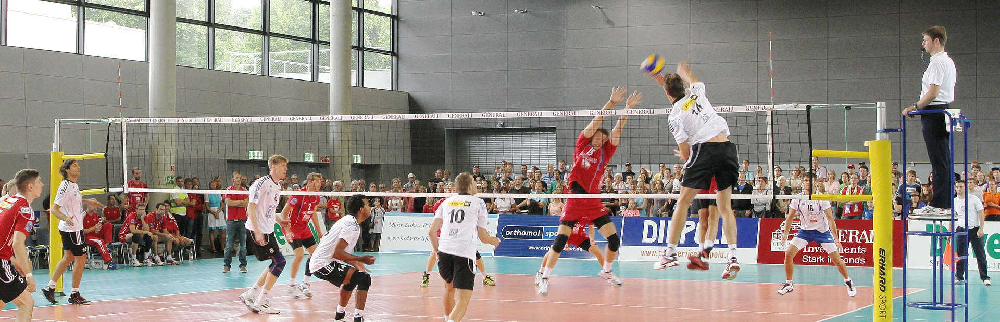
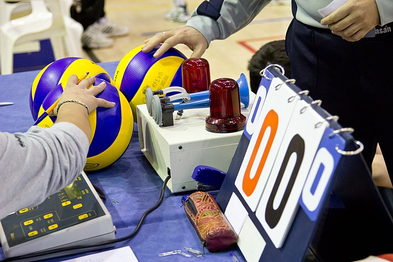
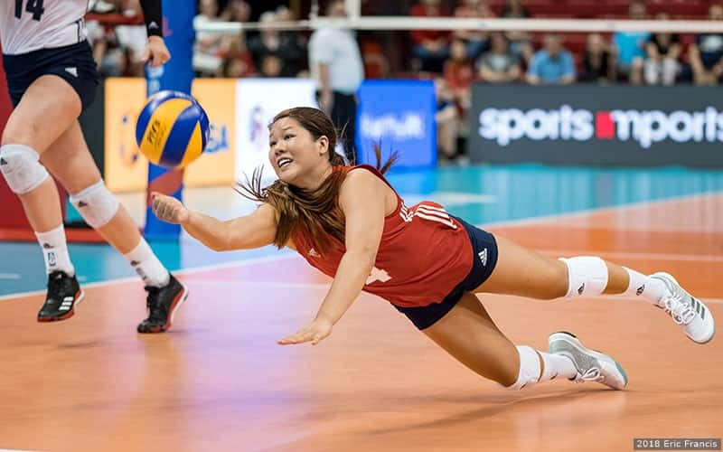

WELCOME TO MY FIRST WEBSITE
GAMEPLAY.
GAMEPLAY

|
- Each team consists of six players.[18] To get play started, a team is chosen to serve by coin toss. A player from the serving team throws the ball into the air and attempts to hit the ball so it passes over the net on a course such that it will land in the opposing team's court (the serve).[18] The opposing team must use a combination of no more than three contacts with the volleyball to return the ball to the opponent's side of the net.[18] These contacts usually consist first of the bump or pass so that the ball's trajectory is aimed towards the player designated as the setter; second of the set (usually an over-hand pass using wrists to push finger-tips at the ball) by the setter so that the ball's trajectory is aimed towards a spot where one of the players designated as an attacker can hit it, and third by the attacker who spikes (jumping, raising one arm above the head and hitting the ball so it will move quickly down to the ground on the opponent's court) to return the ball over the net.[3] The team with possession of the ball that is trying to attack the ball as described is said to be on offence.
The team on defence attempts to prevent the attacker from directing the ball into their court: players at the net jump and reach above the top (and if possible, across the plane) of the net to block the attacked ball.[3] If the ball is hit around, above, or through the block, the defensive players arranged in the rest of the court attempt to control the ball with a dig (usually a fore-arm pass of a hard-driven ball). After a successful dig, the team transitions to offence.
The game continues in this manner, rallying back and forth until the ball touches the court within the boundaries or until an error is made.[18] The most frequent errors that are made are either to fail to return the ball over the net within the allowed three touches, or to cause the ball to land outside the court.[18] A ball is "in" if any part of it touches the inside of a team's court or a sideline or end-line, and a strong spike may compress the ball enough when it lands that a ball which at first appears to be going out may actually be in. Players may travel well outside the court to play a ball that has gone over a sideline or end-line in the air.
Other common errors include a player touching the ball twice in succession, a player "catching" the ball, a player touching the net while attempting to play the ball, or a player penetrating under the net into the opponent's court. There are a large number of other errors specified in the rules, although most of them are infrequent occurrences. These errors include back-row or libero players spiking the ball or blocking (back-row players may spike the ball if they jump from behind the attack line), players not being in the correct position when the ball is served, attacking the serve in the frontcourt and above the height of the net, using another player as a source of support to reach the ball, stepping over the back boundary line when serving, taking more than 8 seconds to serve,[21] or playing the ball when it is above the opponent's court.
SCORING

|
- A point is scored when the ball contacts the floor within the court boundaries or when an error is made: when the ball strikes one team's side of the court, the other team gains a point; and when an error is made, the team that did not make the error is awarded a point, in either case paying no regard to whether they served the ball or not. If any part of the ball hits the line, the ball is counted as in the court. The team that won the point serves for the next point. If the team that won the point served in the previous point, the same player serves again. If the team that won the point did not serve the previous point, the players of the team acquiring the serve rotate their position on the court in a clockwise manner. The game continues, with the first team to score 25 points by a two-point margin awarded the set. Matches are best-of-five sets and the fifth set, if necessary, is usually played to 15 points. (Scoring differs between leagues, tournaments, and levels; high schools sometimes play best-of-three to 25; in the NCAA matches are played best-of-five to 25 as of the 2008 season.)[22]
Before 1999, points could be scored only when a team had the serve (side-out scoring) and all sets went up to only 15 points. The FIVB changed the rules in 1999 (with the changes being compulsory in 2000) to use the current scoring system (formerly known as rally point system), primarily to make the length of the match more predictable and to make the game more spectator- and television-friendly.
The final year of side-out scoring at the NCAA Division I Women's Volleyball Championship was 2000. Rally point scoring debuted in 2001,[23] and games were played to 30 points through 2007. For the 2008 season, games were renamed "sets" and reduced to 25 points to win. Most high schools in the U.S. changed to rally scoring in 2003,[24][25][26] and several states implemented it the previous year on an experimental basis.[27]
LIBERO

|
- The libero player was introduced internationally in 1998,[28] and made its debut for NCAA competition in 2002.[29] The libero is a player specialized in defensive skills: the libero must wear a contrasting jersey color from their teammates and cannot block or attack the ball when it is entirely above net height. When the ball is not in play, the libero can replace any back-row player, without prior notice to the officials. This replacement does not count against the substitution limit each team is allowed per set, although the libero may be replaced only by the player whom he or she replaced. Most U.S. high schools added the libero position from 2003 to 2005.[25][30]
The modern-day libero often takes on the role of a second setter. When the setter digs the ball, the libero is typically responsible for the second ball and sets to the front row attacker. The libero may function as a setter only under certain restrictions. To make an overhand set, the libero must be standing behind (and not stepping on) the 3-meter line; otherwise, the ball cannot be attacked above the net in front of the 3-meter line. An underhand pass is allowed from any part of the court.
The libero is, generally, the most skilled defensive player on the team. There is also a libero tracking sheet, where the referees or officiating team must keep track of whom the libero subs in and out for. Under FIVB (Federation Internationale de Volleyball) rules, two liberos are designated at the beginning of the play, only one of whom can be on the court at any time.
Furthermore, a libero is not allowed to serve, according to international rules. NCAA rules for both men and women differ on this point; a 2004 rule change allows the libero to serve, but only in a specific rotation. That is, the libero can only serve for one person, not for all of the people for whom he or she goes in. That rule change was also applied to high school and junior high play soon after.